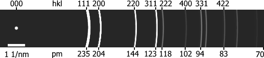

Semiangle Calculator
High Tension [kV]:
Presets:
60
80
120
200
300
BF disk diameter [px]:
Au
(111)
(200)
(220)
(113)
(222)
(400)
diameter [px]:
Desired semiangle [mrad]:
UI displayed semiangle [mrad]:
Calculate
aberration target parameters 300 kV + Au Debye rings
C1
A1
B2
A2
C3
S3
A3
~0 nm
<5 nm
<20 nm
<50 nm
~1 µm
<500 nm
<2 µm
